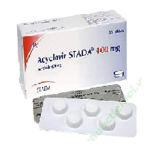

Acyclovir

Acyclovir ဆိုတာ
- ဗိုင်းရပ်ပိုးသတ်ဆေး ဖြစ်ပြီး အဓိကအနေနဲ့ ရေယုန်ရောဂါမှာသုံးပါတယ်။
- ရေယုန်ဖြစ်စေတဲ့ Herpes ပိုးပွားနှုန်းနဲ့ ပြန့်ပွားနှုန်းကို လျှော့ချပေးပြီး ရေယုန်လက္ခဏာကိုသက်သာစေပါတယ်။
- လိမ်းဆေး၊သောက်ဆေး၊ဆေးရည် ပုံစံအမျိုးမျိုးရှိပါတယ်။
အသုံးဝင်ပုံ
- ပါးစပ်ရေယုန်၊ ခါးပတ်ရေယုန်၊ လိင်အင်္ဂါရေယုန်စတဲ့ ရေယုန်အမျိုးမျိုးကို သက်သာစေပါတယ်။
- ရေကျောက်ဖြစ်စေတဲ့ ဗိုင်းရပ်ပိုးကို ကုသရာမှာလည်း သုံးပါတယ်။
- ခုခံအားကျနေတဲ့ လူတွေမှာ တခြားရောဂါပိုးဝင်တာကိုလည်း လျှော့ချပေးနိုင်ပါတယ်။
သောက်သုံးပုံ
- ဆရာဝန်ညွှန်ကြားတဲ့ အတိုင်း တစ်နေ့ နှစ် ကြိမ်ကနေ ငါးကြိမ်အထိ သောက်ဖို့လိုပါမယ်
။
- ဆေးရည်သောက်ရင် ပုလင်းကို သေချာလှုပ်ပြီးမှ သောက်ပါ။
- ခန္ဓာကိုယ်လေးချိန် ပေါ်မူတည်ပြီး သောက်ရတဲ့ ဆေးပမာဏ မတူပါဘူး
ဘေးထွက်ဆိုးကျိုးများ
ခေါင်းကိုက်ခြင်း၊ ပျို့အန်ခြင်း၊ ဝမ်းပျက်ခြင်း၊ ထင်ယောင်ထင်မှားဖြစ်ခြင်း၊ လှုပ်ရှားမှု နှေးကွေးလေးလံ သွားခြင်းများ ဖြစ်နိုင်ပါတယ်။
ရောဂါလက္ခဏာ ဆိုးရင်တော့ဆရာဝန်သွားပြဖို့လိုပါတယ်။
AIDSရောဂါ၊ ရိုးတွင်းခြင်ဆီအစားထိုးခြင်း၊ ကျောက်ကပ်လဲခြင်းများ ပြုလုပ်ထားရင် တော့ ဆေးမတည့်တဲ့ လက္ခဏာ ပိုပြနိုင်ပါတယ်။
သတိပြုရန်အချက်များ
- Acyclovir အုပ်စုဝင် Valacyclovir ဆေးအုပ်စုနဲ့ မတည့်ဖူးတဲ့ ပြသနာရင်၊ တခြားဆေးတွေနဲ့ ဓာတ်မတည့်ဖူးရင်၊ တခြားရောဂါအခံ ရှိရင် ဆရာဝန်ကိုကြိုပြောထားရပါမယ်။
- Acyclovir ဆေးသုံးနေစဉ် အရက်၊ ဆေးလိပ်သောက်တာလျှော့ရပါမယ်။
- ရေယုန်ရောဂါဖြစ်ပွားနေစဉ် ပါတနာကို ရောဂါမကူးစက်ဖို့အတွက် အတူတူနေရင် အကာအကွယ်သုံးရပါမယ်။
- ကိုယ်ဝန်ဆောင်သည်နဲ့ နို့တိုက်မိခင်တွေကလည်း ဆရာဝန်နဲ့ သေချာတိုင်ပင်ပြီးမှ သုံးသင့်ပါတယ်။
ဆေးအာနိသင်
- တိုင်းရင်းဆေး၊ မြန်မာဆေး တခြားဆေးများနဲ့ တွဲသောက်ရင် ဆေးအာနိသင်ပြောင်းသွားနိုင်လို့ မသောက်ခင် ဆရာဝန်နဲ့ ဆွေးနွေးတိုင်ပင်သင့်ပါတယ်။
ဆေးအရှိန်လွန်ခြင်း
- ဆေးသောက်လွန်ရင် အလွန်အမင်းပျို့အန်ခြင်း၊ ဆီးသွားနည်းခြင်း၊ နှုံးခြင်း၊ စိတ်ဂနာမငြိမ်ဖြစ်ခြင်းနဲ့ သတိလစ်တဲ့အထိ ဖြစ်နိုင်ပါတယ်။
Source– ဒေါက်တာ အိမ့်ချယ်ရီ